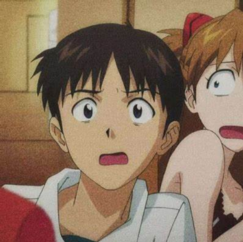
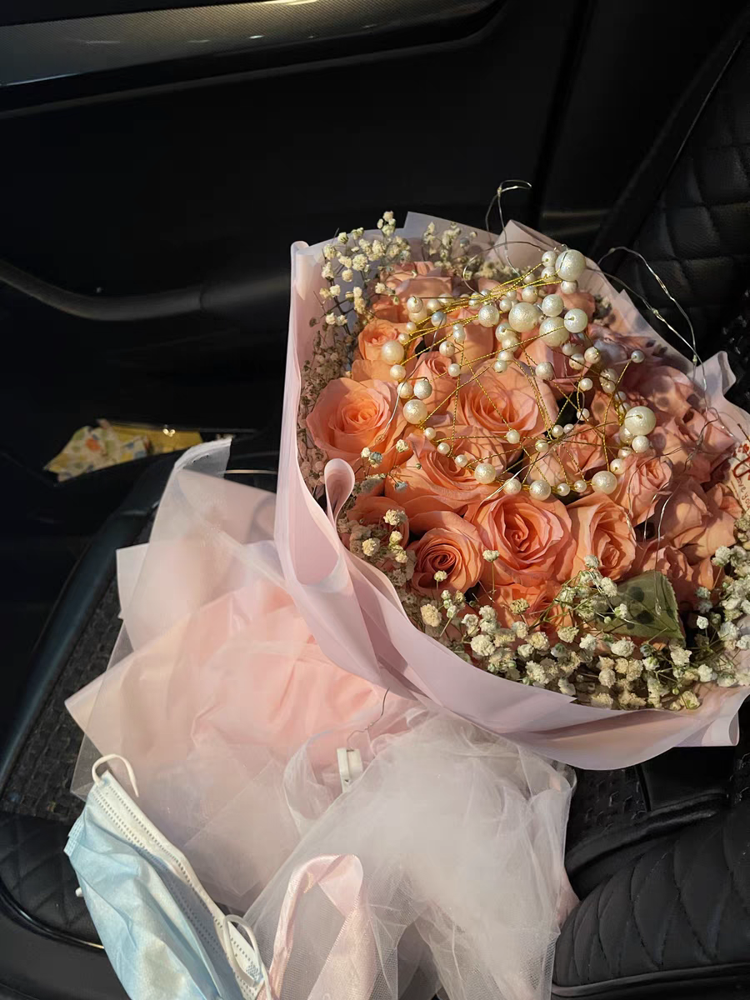
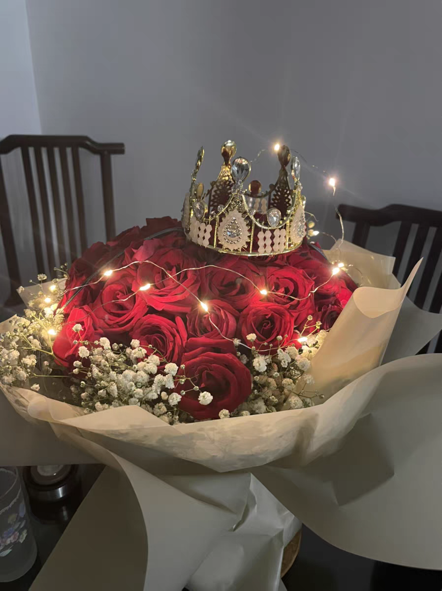
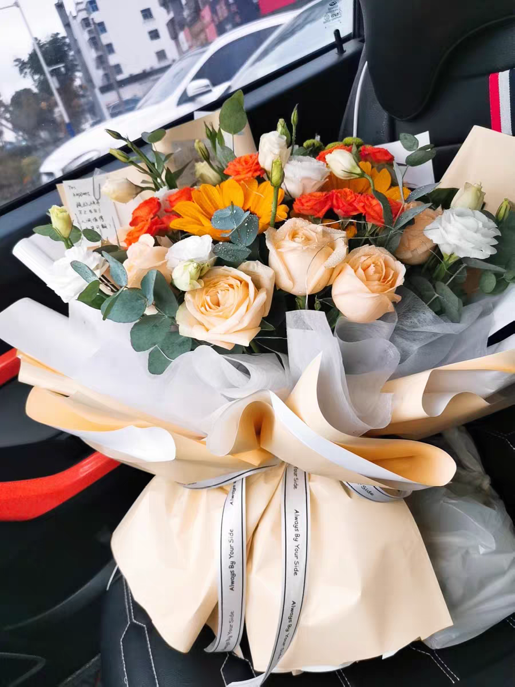

LULU
{{username}},欢迎您
亲，请登录
最新评论:


超级棒，女朋友非常喜欢，七夕节送女友求婚再适合不过啦~女朋友现在已经同意了！明年就结婚！

第一次送女朋友花，选择了这家店。看了官方推荐选择了这款，女朋友超级感动，说我终于开窍了要拉着我去领结婚证，不说了她催我走了

送给我的好姐妹的花，祝我们友谊长存~七夕节姐妹没有人送她花怎么办，当然是替她未来男朋友送她啦

达人推荐